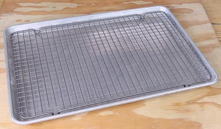

Rimmed Baking Sheet & Rack

Baking Sheet
If you have an oven, Baking Sheets are essentil. That in the photo is a
"Half Sheet" size, 18 x 13 inches (46 x 33 cm) of heavy gage aluminum sheet.
This is the largest size that will fit in most ovens in North America.
Wire Rack
This is a multi-use item. It can be used outside
the Baking Sheet as a cooling or drying rack. It can be used with the
Baking Sheet for roasting many foods. For instance: line the baking sheet
with aluminum foil. Place marinated chicken wings on the rack. Roast at
400°F / 200 ° C. The rack in the photo is Nordic Ware, purchased
for 2021 US $18.18, and perfectly sized for a Half Sheet Baking Pan.
More on Kitchen Gear.
ke_slotspn1 220719 - www.clovegarden.com
©Andrew Grygus - agryg@clovegaden.com
Photos on this
page not otherwise credited are © cg1 -
Linking to and non-commercial use of this page permitted